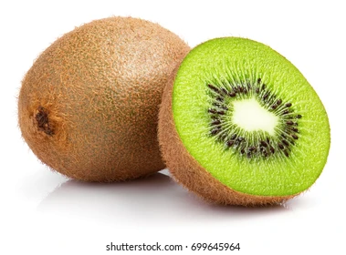

Descubre el nuevo Kiwi
El Kiwi es la última sensación en frutas tropicales. Con un sabor único y beneficios saludables, lleva la frescura al siguiente nivel.
Características destacadas:
- Dulce y refrescante
- Rico en vitamina C y fibra
- Bajo en calorías
- Perfecto para smoothies y ensaladas